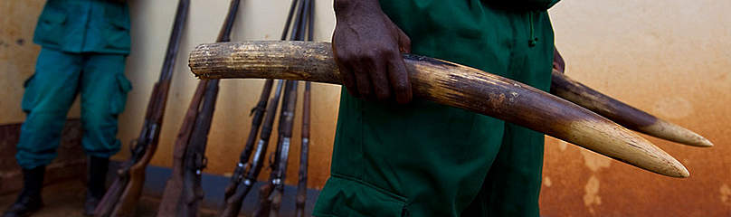
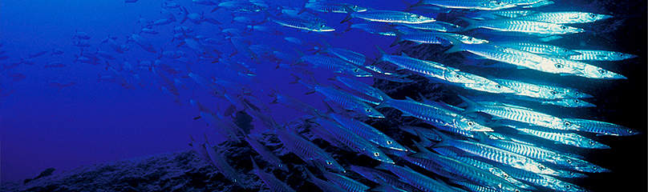
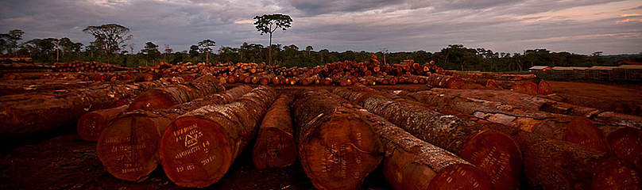

Lutte anti-braconnage
Le WWF doit faire face à une recrudescence du braconnage, qui détruit la faune et menace d'extinction les espèces protégées. Encouragés par l'appat du gain et la faiblesse des peines encourues, les braconniers sont aussi bien équipés, organisés et financés qu'une armée.
Espèces invasives
Les espèces invasives, qui ont un impact sur la composition et le fonctionnement des écosystèmes, peuvent menacer la survie d’autres espèces, avec des conséquences sociales et économiques parfois importantes.
Destruction d'habitat
La destruction, la fragmentation ainsi que l’altération des écosystèmes, habitats naturels et semi-naturels, constitue un facteur majeur de l’érosion de la biodiversité.